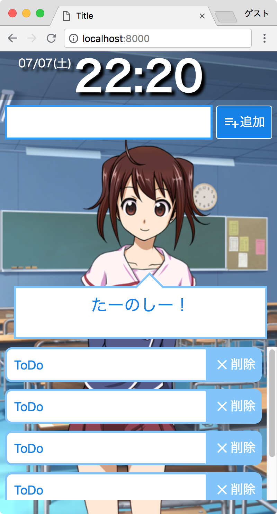

10. Djangoで開発
リクエストの作成
「3.ワイヤーフレーム」を思い返して、Todoアプリに必要なPathを抽出します。
| 機能 | Path | リダイレクト | 画面 |
|---|---|---|---|
| 一覧表示 | /index | 無し | 有り |
| 追加 | /create | 有り(一覧表示へ) | 無し |
| 更新 | /update | 有り(一覧表示へ) | 無し |
| 削除 | /delete | 有り(一覧表示へ) | 無し |
上記を元に、todo/urls.pyにプログラムを追加します。
1 2 3 4 5 6 7 8 9 10 11 12 | # todo/urls.py from django.urls import path from todo import views app_name = 'todo' urlpatterns = [ path('', views.index, name='index'), path('create', views.create, name='create'), path('<int:post_id>/update', views.update, name='update'), path('<int:post_id>/delete', views.delete, name='delete'), ] |
Note
Django2.xでIDを受け渡す時は、<int:変数名>とします。(過去のDjangoだと、正規表現が必要でした)
ここで指定した変数名が、views.pyで受け取れます。
例えば<int:hoge_id>とした場合、views.pyでは以下で受け取れます。
def update(request, hoge_id):
def delete(request, hoge_id):
todo/views.pyを、以下プログラムに入れ替えます。
1 2 3 4 5 6 7 8 9 10 11 12 13 14 15 16 17 18 19 20 21 22 23 24 25 26 27 28 29 30 31 32 33 34 35 36 37 38 39 40 41 42 43 44 45 46 47 48 49 | # todo/views.py from django.shortcuts import render, redirect, get_object_or_404 from django.urls import reverse from random import randrange from todo.forms import PostForm from todo.models import Post messages = [ '頑張ってね。応援してるよ！', '君はタスク管理が得意な フレンズなんだね', 'すごーい！', 'たーのしー！', '' ] def index(request): posts = Post.objects.order_by('-created_at') if len(posts) == 0: message = 'タスクを追加してね' else: dice = randrange(len(messages)) message = messages[dice] context = { 'posts': posts, 'message': message } return render(request, 'todo/index.html', context) def create(request): form = PostForm(request.POST) if form.is_valid(): form.save() return redirect(reverse('todo:index')) def update(request, post_id): post = get_object_or_404(Post, pk=post_id) post.completed = not post.completed post.save() return redirect(reverse('todo:index')) def delete(request, post_id): post = get_object_or_404(Post, pk=post_id) post.delete() return redirect(reverse('todo:index')) |
def index(request)のプログラムについて
Djangoでは、ORM(オブジェクト関係マッピング)でDBを操作します。
Post.objects.all() ... 全件取得する
Post.objects.order_by('-created_at') ... 登録日の降順で全件取得する
※ ORMで使用できるメソッドについては、ここに一覧で載っています。
ORMで取得した値を、render()の第三引数に渡すことで、HTML内から参照できるようになります。
posts = Post.objects.all()
return render(request, 'todo/index.html', {'posts': posts})
todo/forms.pyというファイルを追加して、以下のプログラムを作成します。
1 2 3 4 5 6 7 8 9 10 | # todo/forms.py from django.forms import ModelForm from todo.models import Post class PostForm(ModelForm): class Meta: model = Post fields = ('task', 'completed') |
def create(request)のプログラムについて
ModelFormを作成すると、POST(またはGET)された値が、DBに正しく格納できるかチェックすることができます。
以下は、POSTが正しければDBに書き込むプログラムです。
form = PostForm(request.POST)
if form.is_valid():
form.save()
また、return redirect(reverse('todo:index'))とすることで、対象URLにリダイレクトできます。
def update(request, post_id)のプログラムについて
urls.pyで<int:post_id>と指定したので、update(request, post_id)のpost_idにIDが格納されています。
post = get_object_or_404(Post, pk=post_id)は、データが存在しない場合に404エラーを返します。
データが存在した場合、not post.completedで完了状態を入れ替えて、セーブしています。(Falseの場合→True。Trueの場合→False)
def delete(request, post_id)のプログラムについて
updateと似たようなプログラムですが、データが存在したらdelete()しているだけの簡素なプログラムです。
HTMLの修正
todo/templates/todo/index.htmlを、以下のように変更します。
1 2 3 4 5 6 7 8 9 10 11 12 13 14 15 16 17 18 19 20 21 22 23 24 25 26 27 28 29 30 31 32 33 34 35 36 37 38 39 40 41 42 43 44 45 46 47 48 49 50 51 52 53 | <!-- todo/templates/todo/index.html --> {% load static %} <!DOCTYPE html> <html lang="ja"> <head> <meta charset="utf-8"> <meta name="viewport" content="width=device-width, initial-scale=1, shrink-to-fit=no"> <link href="{% static 'todo/css/style.css' %}" rel="stylesheet"> <link href="https://fonts.googleapis.com/icon?family=Material+Icons" rel="stylesheet"> <script src="{% static 'todo/js/moment-with-locales.js' %}"></script> <title>Simple ToDo</title> </head> <body> <header> <div> <div id="date"></div> <div id="time"></div> </div> </header> <main> <form class="create" method="post" action="{% url 'todo:create' %}"> {% csrf_token %} <input type="text" name="task"> <button><i class="material-icons">playlist_add</i>追加</button> </form> <div class="character"> <img src="{% static 'todo/img/yuri_normal.png' %}"> </div> {% if message %} <div class="balloon"> <div>{{ message }}</div> </div> {% endif %} <form id="list" method="post" action="#"> {% csrf_token %} {% for post in posts %} <div> <input type="text" name="task" class="{{ post.completed|yesno:'line,' }}" value="{{ post.task }}" onclick="submitAction('{% url 'todo:update' post.id %}')" readonly> <button type="button" onclick="submitAction('{% url 'todo:delete' post.id %}')"> <i class="material-icons">clear</i>削除 </button> </div> {% endfor %} </form> </main> <script src="{% static 'todo/js/main.js' %}"></script> </body> </html> |
load static と url について
{% load static %}と記述すると、staticファイルが{% static '対象ファイル' %}で参照できるようになります。
{% url 'todo:create' %}は、urlを取得するプログラムです。
todo:は、urls.pyで指定したapp_name = 'todo'です。
form について
クロスサイトリクエストフォージェリ(CSRF)を防ぐため、<form>タグには{% csrf_token %}が必須です。
無いとエラーになります。
if と for 文について
Djangoのテンプレートでは、ifとfor文を以下のように記述します。
if文
{% if 判定ロジック %}
{% endif %}
for文
{% for 処理ロジック %}
{% endfor %}
http://localhost:8000にアクセスして、アプリが動作したら完成です。

最後に
お疲れ様でした。
全ファイルをzipにしたので、もし見たければダウンロードしてください。
(XMaindやAdobe XDのファイルも含まれています)